아래는 주요 컬러 변수와 예시입니다. (SCSS 변수: _common.scss 참고)
--color-wafer-blue1: #3392D3 (Primary Blue)--color-wafer-blue2: #0077C8--color-black: #03091D--color-gray1: #444444--color-gray2: #666666--color-gray3: #999999--color-gray4: #D9D9D9--color-gray5: #EFEFF0--color-bg1: #F6F7FB--color-bg2: #F2F2F2--color-error1: #D62323 (Error)--color-error2: #FF4242--color-white: #FFFFFF컬러 유틸리티 클래스 예시: .waferblue1, .gray3, .bg1, .error1 등
사용 예시: <div class="waferblue1">Blue BG</div>
아래는 주요 폰트 패밀리, 웨이트, 텍스트 스타일 클래스 예시입니다. (SCSS 변수: _common.scss 참고)
--font-family-primary: 'SamsungOne', 'SamsungOneKorean', ...--font-family-pretendard: 'Pretendard', ...--font-family-futura: 'Futura', ...--font-family-en: 영문 전용--font-family-ko: 한글 전용--font-weight-extralight: 200--font-weight-light: 300--font-weight-regular: 400--font-weight-medium: 500--font-weight-semibold: 600--font-weight-bold: 700--font-weight-extrabold: 800텍스트 스타일 클래스 예시:
.h4_ko, .h5_ko, .b3_ko, .b5_ko (Pretendard, 한글).h4_en, .b1_en (Futura, 영문).h4_ko_s, .b3_ko_s (SamsungOneKorean, 한글)유틸리티 클래스 예시: .font-bold, .font-regular, .f_pr (Pretendard), .f_f (Futura)
사용 예시: <span class="h4_ko font-bold">헤드라인</span>
아래 이미지는 버튼의 주요 상태/스타일(기본, 비활성화, 서치, 링크, 텍스트온리, 라운드, 탭, 컬러, 언더라인 등)을 보여줍니다.
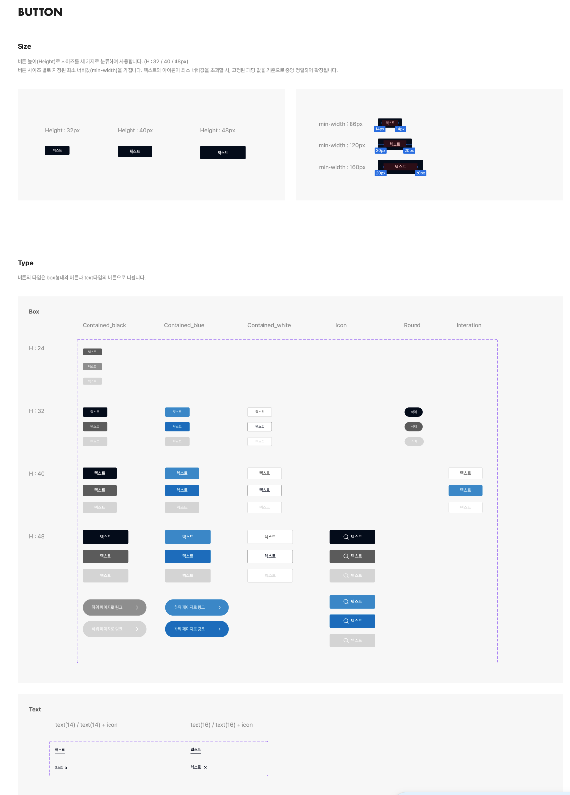
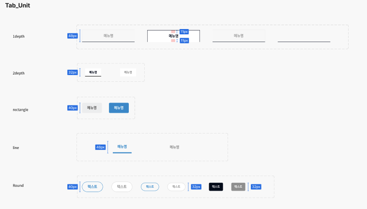
<Button
text="확인"
:size="'40'"
:background-color="'waferblue1'"
:font-color="'white'"
:disabled="false"
:search="false"
:link="false"
:only-text-14="false"
:round="false"
:hover-action="true"
/><button class="btn btn--40 waferblue1">
<span class="button-text">확인</span>
</button>.btn: 기본 버튼 클래스.btn--40, .btn--32 등: 사이즈별 클래스.waferblue1, .gray2 등: 배경색 클래스.btn--disabled: 비활성화.btn--search: 서치 아이콘.btn--link: 링크 스타일.btn--only-text-14, .btn--only-text-16, .btn--only-text-close-14, .btn--only-text-close-16: 텍스트온리.btn--round: 라운드.btn--rectangular: 탭/네모.btn--underline: 언더라인 스타일.btn--hover-color, .btn--hover-font-color, .btn--hover-line-color, .btn--hover-action: 호버 효과.button-text: 텍스트 영역.icon-search, .icon-arrow-right, .icon-close: 아이콘24~48px (size prop)4px (round: 100px)backgroundColor, fontColor propborder-bottom: 1px solid var(--underline-color, var(--color-gray3)) (underlineColor prop)background: var(--color-gray4), color: var(--color-white)hoverColor, hoverFontColor, hoverLineColor, hoverAction/icon 경로의 SVG 파일 사용아래 이미지는 텍스트 인풋의 주요 상태(기본, 포커스, 입력됨, 완료, 비활성화, 에러, 읽기전용, 콤보, 검색)를 보여줍니다.
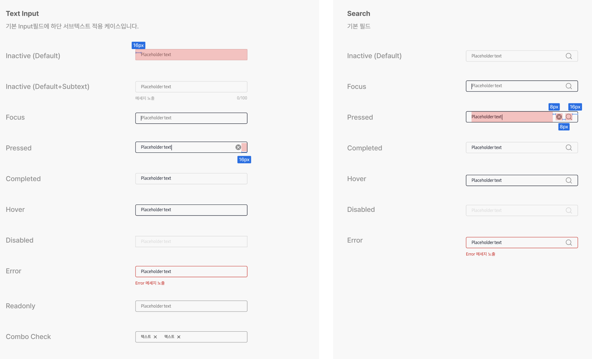
<TextInput
v-model="inputValue"
:placeholder="'이름을 입력하세요'"
:count="20"
:error="errorMessage"
:readonly="false"
:disabled="false"
:combo="comboList"
:search="true"
/><div class="text-input pressed has-count">
<div class="input-wrapper">
<input type="text" class="" placeholder="이름을 입력하세요" value="홍길동">
<button class="clear-btn" type="button">
<span aria-hidden="true">
<img src="/portal-ui/icon/icon-clear.svg" alt="close">
</span>
</button>
<div class="icon-search">
<img src="/portal-ui/icon/icon-input-search.svg" alt="search">
</div>
<div class="combo-list">
<span class="combo-item">태그1 <span class="combo-remove">✕</span></span>
<span class="combo-item">태그2 <span class="combo-remove">✕</span></span>
</div>
</div>
<div class="messages">
<div class="subtext">서브텍스트 예시</div>
<div class="count">
<span class="count-text">3</span>/<span class="count-text">20</span>
</div>
</div>
</div>.text-input: 전체 wrapper.input-wrapper: 인풋 컨테이너input: 실제 입력창.clear-btn: 입력값 삭제 버튼.icon-search: 검색 아이콘.combo-list: 콤보 아이템 리스트.combo-item: 콤보 아이템.combo-remove: 콤보 아이템 삭제.error-msg: 에러 메시지.messages: 하단 메시지 영역.subtext: 서브텍스트.count: 글자수 표시.count-text: 글자수 텍스트pressed, focus, completed, is-disabled, readonly, error, is-search, has-count, has-error, has-subtext, is-combowidth: 320px; height: 32px;0 16px4px1px solid var(--color-gray4)border-color: #03091Dborder-color: var(--color-gray4)color: var(--color-gray4)color: var(--color-gray2)border-color: var(--color-error1)#666 (포커스/호버 시 #03091D).combo-list 하위에 표시.icon-search로 우측에 표시.clear-btn로 우측에 표시.count로 우측 하단 표시.error-msg로 하단 표시count prop으로 지정error prop으로 표시아래 이미지는 텍스트에어리어의 주요 상태(기본, 포커스, 입력됨, 완료, 비활성화, 에러, 읽기전용)를 보여줍니다.
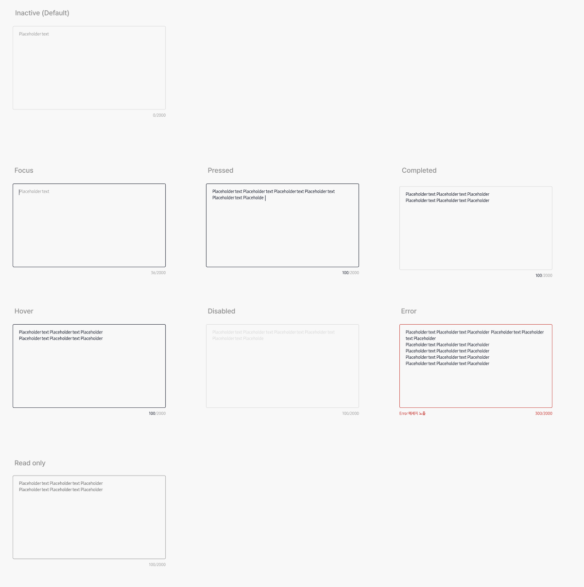
<Textarea
v-model="textValue"
:placeholder="'내용을 입력하세요'"
:max-length="200"
:disabled="false"
:read-only="false"
:completed="false"
:error="false"
error-message="에러 메시지 예시"
/><div class="textarea-wrapper">
<div class="textarea-container textarea-container--focus">
<textarea class="textarea-input b4_ko_s"></textarea>
<div class="textarea-bottom">
<div class="error-message b5_ko_s">에러 메시지 예시</div>
<div class="character-count b5_ko_s">
<span class="character-count-number">12</span>/200
</div>
</div>
</div>
</div>.textarea-wrapper: 전체 wrapper.textarea-container: 텍스트에어리어 컨테이너.textarea-container--focus: 포커스 상태.textarea-container--pressed: 입력값이 있을 때.textarea-container--completed: 완료 상태.textarea-container--hover: 마우스 오버 상태.textarea-container--disabled: 비활성화 상태.textarea-container--error: 에러 상태.textarea-container--readonly: 읽기전용 상태.textarea-input: textarea 입력창.textarea-bottom: 하단 영역(에러 메시지, 글자수).error-message: 에러 메시지.character-count: 글자수 표시.character-count-number: 현재 글자수14px 18px4px1px solid var(--color-gray4)border-color: var(--color-black)border-color: var(--color-gray4)border-color: var(--color-gray4), color: var(--color-gray3)border-color: var(--color-error1), 글자수/에러 메시지 color: var(--color-error1)border-color: var(--color-gray3), color: var(--color-gray2)var(--color-gray3) (포커스/호버 시 var(--color-black))maxLength로 지정error와 errorMessage 조합으로 표시아래 이미지는 라디오 버튼의 네 가지 상태를 보여줍니다.
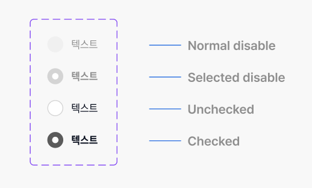
<Radio
v-model="selectedOption"
:value="'option1'"
label="옵션 1"
name="exampleRadio"
/><label class="radio checked">
<input type="radio" name="exampleRadio" value="option1" checked />
<span class="radio-icon"></span>
<span class="radio-label b3_ko_s">옵션 1</span>
</label>.radio: 기본 wrapper.checked: 선택된 상태.disabled: 비활성화 상태일 경우 추가됨.radio-icon: 아이콘 영역 (배경이미지로 상태 구분).radio-label: 텍스트 라벨 영역20px × 20px8pxradio-unchecked.svgradio-checked.svgradio-unchecked-disabled.svgradio-checked-disabled.svgfont-weight: 700var(--color-gray3)본 컴포넌트는 scoped style로 작성되어 있으며, 아이콘은 /icon 경로의 SVG 파일을 사용합니다.
아래 이미지는 체크박스의 주요 상태(기본, 체크됨, 비활성화, 체크+비활성화)를 보여줍니다.
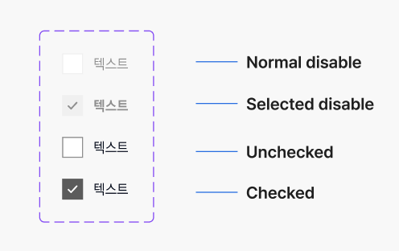
<Checkbox
v-model:checked="isChecked"
:disabled="false"
label="동의합니다."
/><label class="checkbox checked">
<input type="checkbox" checked />
<span class="checkbox-icon"></span>
<span class="checkbox-label">동의합니다.</span>
</label>.checkbox: 전체 wrapper.checked: 체크된 상태.disabled: 비활성화 상태.checkbox-icon: 체크박스 아이콘.checkbox-label: 라벨 텍스트20px × 20px8pxborder: 1px solid var(--color-gray3), background: var(--color-white)background: url('/portal-ui/icon/checkbox-checked.svg')border: 1px solid var(--color-bg2), color: var(--color-gray3)background: url('/portal-ui/icon/checkbox-checked-disabled.svg'), font-weight: 700/icon 경로의 SVG 파일 사용아래 이미지는 드롭다운의 주요 상태(기본, 포커스, 입력됨, 완료, 비활성화, 에러, 읽기전용, 다중선택, 라디오스타일, 검색)를 보여줍니다.
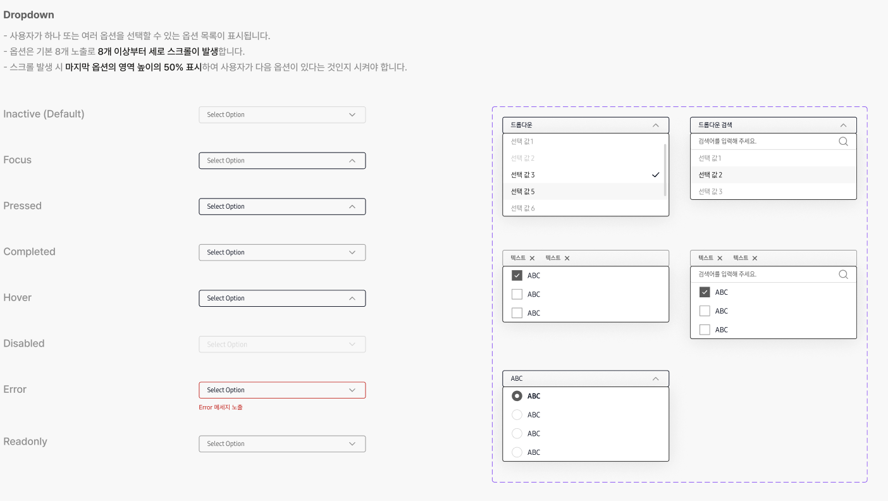
<CustomDropdown
v-model="selectedValue"
:options="dropdownOptions"
placeholder="옵션을 선택하세요"
:multiple="false"
:disabled="false"
:readonly="false"
:variant="'default'"
:error-message="errorMessage"
:show-clear="true"
:searchable="true"
search-placeholder="검색어 입력"
:show-check-icon="true"
:radio-style="false"
/><div class="dropdown-wrapper">
<div class="custom-dropdown dropdown-component">
<div class="custom-dropdown-content">
<span class="custom-dropdown-label">옵션 1</span>
</div>
<button class="clear-button"><img src="/portal-ui/icon/icon-close-gray.svg" alt="clear"></button>
<div class="custom-dropdown-icon"></div>
</div>
<small class="p-error b5_ko_s">에러 메시지 예시</small>
</div>
<!-- 오버레이는 body에 Teleport되어 렌더링 -->
<div class="dropdown-overlay">
<div class="search-header">
<input class="search-input" placeholder="검색어 입력" />
</div>
<div class="options-container">
<div class="dropdown-option">
<span class="option-check"><span class="radio-icon"></span></span>
<span class="option-label">옵션 1</span>
<span class="option-check img-checked"><img src="/portal-ui/icon/icon-dropdown-selected.svg" alt="selected"></span>
</div>
<!-- ... -->
</div>
</div>.dropdown-wrapper: 전체 wrapper.custom-dropdown: 드롭다운 컨테이너.dropdown-component: 상태별 스타일 클래스.custom-dropdown-content: 선택된 값/칩 표시 영역.custom-dropdown-label: 선택된 값 또는 placeholder.clear-button: 선택값 삭제 버튼.custom-dropdown-icon: 드롭다운 화살표 아이콘.dropdown-overlay: 오버레이(옵션 리스트, body에 Teleport됨).search-header: 검색 입력창 영역.search-input: 검색 인풋.options-container: 옵션 리스트 컨테이너.dropdown-option: 각 옵션.option-check: 체크/라디오 아이콘 영역.option-label: 옵션 라벨.img-checked: 체크 아이콘이 있을 때 오른쪽 마진 제거.p-error: 에러 메시지32px6px1px solid var(--color-gray4)border-color: var(--color-black)border-color: var(--color-gray3)border-color: var(--color-gray4), color: var(--color-gray3)border-color: var(--color-error1)#666.option-label (font-size: 14px).chip (font-size: 12px).option-check (20x20px).dropdown-overlay (border-radius: 4px, border: 1px solid #222).p-error (글자색: var(--color-error1))errorMessage prop으로 표시/icon 경로의 SVG 파일 사용아래 이미지는 데이트피커의 주요 상태(기본, 포커스, 입력됨, 완료, 비활성화, 에러, 오픈)를 보여줍니다.
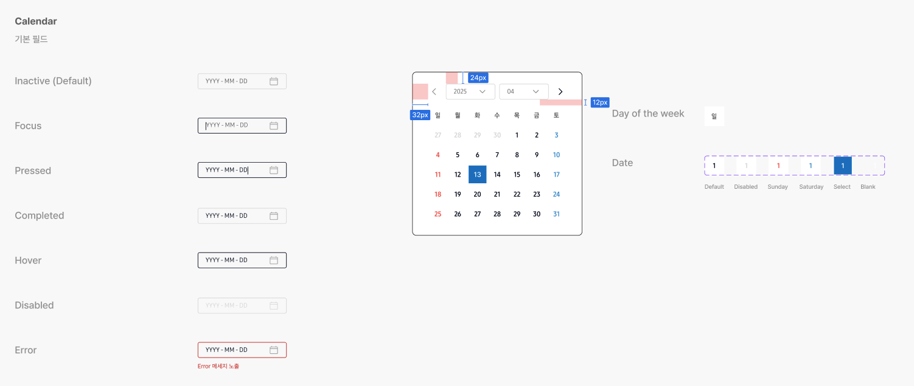
<CustomDatepicker
v-model="selectedDate"
:placeholder="'날짜를 선택하세요'"
:disabled="false"
:variant="'default'"
:error="false"
error-message="날짜를 선택해주세요."
/><div class="datepicker-wrapper">
<div class="datepicker-input datepicker-input--pressed">
<span class="selected-date b4_ko_s">2024-06-01</span>
<span class="datepicker-icon"></span>
</div>
<div class="error-message">날짜를 선택해주세요.</div>
<div class="datepicker-overlay">
<div class="datepicker-popup">
... (달력 팝업 내용) ...
</div>
</div>
</div>.datepicker-wrapper: 전체 wrapper.datepicker-input: 입력창 컨테이너.datepicker-input--open: 달력 팝업 오픈 상태.datepicker-input--disabled: 비활성화 상태.datepicker-input--error: 에러 상태.datepicker-input--completed: 완료 상태.datepicker-input--focus: 포커스 상태.datepicker-input--pressed: 날짜 선택(입력됨) 상태.selected-date: 선택된 날짜 텍스트.selected-date.placeholder: placeholder 텍스트.datepicker-icon: 달력 아이콘.datepicker-overlay: 오버레이(달력 팝업 배경).datepicker-popup: 달력 팝업.calendar-grid: 달력 그리드.calendar-day: 날짜 셀.calendar-day--selected: 선택된 날짜.calendar-day--today: 오늘 날짜.calendar-day--prev-month, .calendar-day--next-month: 이전/다음 달 날짜.calendar-day--weekend, .calendar-day--saturday, .calendar-day--sunday: 주말/토/일.error-message: 에러 메시지32px7px 16px6px1px solid #d1d5dbborder-color: var(--color-black)border-color: var(--color-gray4)border-color: var(--color-gray4), color: var(--color-gray4)border-color: var(--color-error1)var(--color-gray2)color: var(--color-black).datepicker-icon (20x20px).datepicker-popup (min-width: 344px, border-radius: 8px).calendar-day (40x40px).calendar-day--selected (배경: var(--color-wafer-blue1), 글자색: var(--color-white)).calendar-day--today.calendar-day--weekend, .calendar-day--saturday, .calendar-day--sunday.error-message (글자색: #ef4444)v-model로 바인딩error와 errorMessage 조합으로 표시/icon 경로의 SVG 파일 사용아래 이미지는 데이터테이블의 주요 특징(기본, 헤더/셀 병합, 행 이동 등)을 보여줍니다.
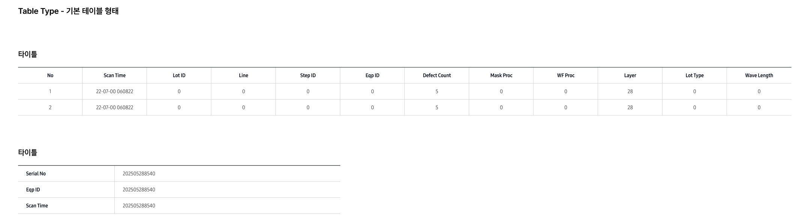
<DataTable
:columns="columns"
:data="tableData"
:merge-rules="mergeRules"
:header-merge-rules="headerMergeRules"
:allow-reorder="true"
/><div class="data-table">
<table class="table">
<thead>
<tr>
<th>헤더1</th>
<th colspan="2">병합헤더</th>
</tr>
<tr>
<th>헤더2</th>
<th>헤더3</th>
</tr>
</thead>
<tbody>
<tr>
<td>값1</td>
<td colspan="2">병합셀</td>
</tr>
<tr>
<td>값2</td>
<td>값3</td>
<td>값4</td>
</tr>
</tbody>
</table>
</div>.data-table: 전체 wrapper.table: 테이블 엘리먼트th, td: 헤더/셀colspan: 병합된 셀/헤더tr: 행.pd-l-20: 왼쪽 패딩.left: 좌측 정렬1px solid var(--color-gray4)2px solid var(--color-black)11px 12pxfont-size: 13px, font-weight: 400font-weight: 700, color: var(--color-black)background-color: var(--color-bg1).left.pd-l-20.w-60 ~ .w-240headerMergeRules, mergeRules prop으로 지정allowReorder prop으로 활성화아래 이미지는 페이지네이션의 주요 상태(기본, 활성, 비활성, 화살표 등)를 보여줍니다.
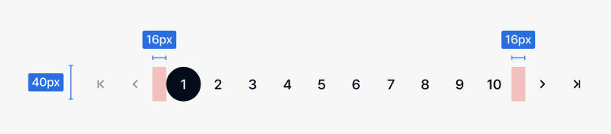
<Pagination /><nav class="pagination">
<ul class="pagination__list">
<li class="pagination__item arrow first"></li>
<li class="pagination__item arrow prev"></li>
<li class="pagination__item number active"><span>1</span></li>
<li class="pagination__item number"><span>2</span></li>
...
<li class="pagination__item arrow next"></li>
<li class="pagination__item arrow last"></li>
</ul>
</nav>.pagination: 전체 wrapper.pagination__list: 리스트.pagination__item: 각 버튼.arrow: 화살표 버튼.number: 숫자 버튼.active: 현재 페이지.disabled: 비활성화40px × 40px50%transparentbackground: var(--color-black), color: var(--color-white)background-image: ...-gray.svgbackground: var(--color-gray5)/icon 경로의 SVG 파일 사용.blind 클래스 사용아래 이미지는 툴팁/팝오버의 주요 상태(위치, 크기, 닫기버튼 등)를 보여줍니다.
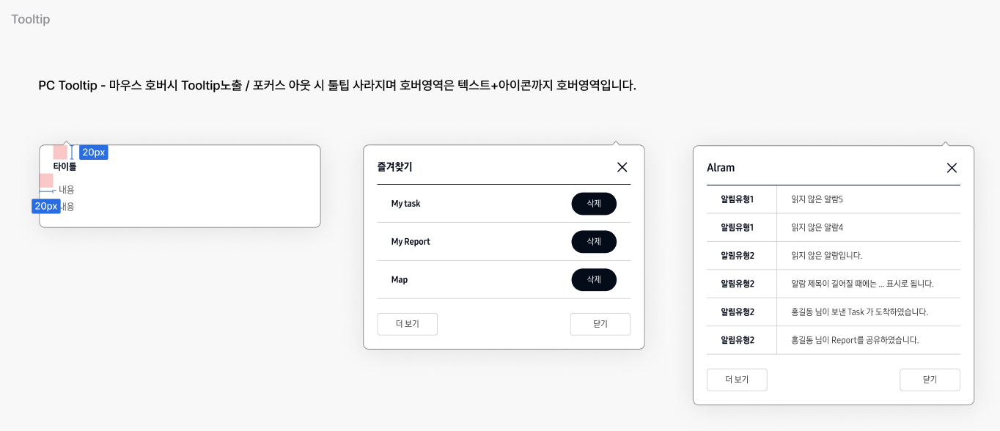
<TooltipPopover :visible="true" size="medium" arrow-position="top" /><div class="tooltip-popover medium top">
<div class="tooltip-arrow top"></div>
<div class="tooltip-content">내용</div>
<button class="tooltip-close"></button>
</div>.tooltip-popover: 전체 팝오버.small, .medium, .large, .custom: 크기.top, .bottom, .left, .right: 화살표 위치.tooltip-arrow: 화살표.tooltip-content: 내용.tooltip-close: 닫기버튼var(--color-white)1px solid var(--color-gray3)8px0 4px 40px rgba(0,0,0,0.08)20pxmin-width: 120~400px, max-width: 220~600pxbackground-image: url('/portal-ui/icon/tooltip-arrow-*.svg')아래 이미지는 퀵메뉴의 주요 상태(기본, 활성, 비활성, 아이템, 애니메이션 등)를 보여줍니다.
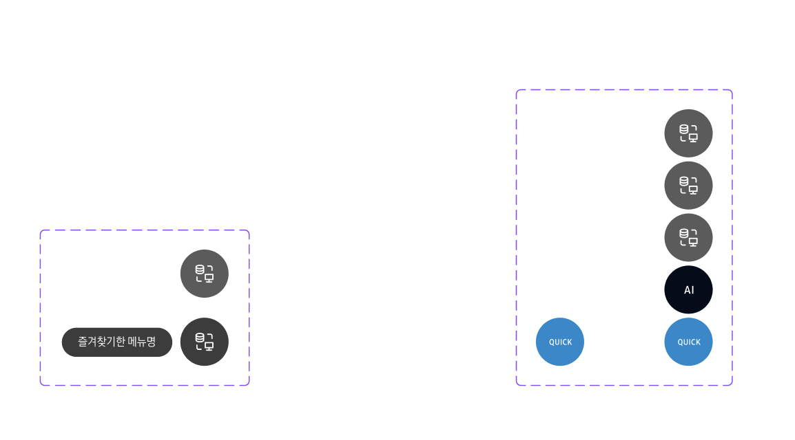
<QuickMenu /><div class="quick-menu">
<button class="quick-menu-item title">...</button>
<button class="quick-menu-item ai">...</button>
<button class="quick-menu-item">...</button>
...
</div>.quick-menu: 전체 wrapper.quick-menu-item: 각 버튼.title: QUICK 버튼.ai: AI 버튼.circle: 원형 배경.quick-menu-name: 아이템 라벨.active: 활성화 상태fixed; bottom: 16px; right: 16px;width: 56px; height: 56px;border-radius: 50%var(--color-gray2)var(--color-wafer-blue1), var(--color-black1).quick-menu-name (우측에 노출)아래 이미지는 브레드크럼의 주요 상태(기본, 활성, 구분자 등)를 보여줍니다.
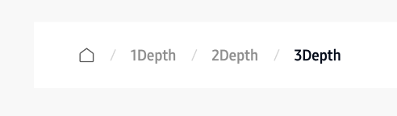
<Breadcrumb /><nav class="breadcrumb-wrap">
<ol class="breadcrumb">
<li><a><span class="blind">홈</span><img src="/portal-ui/icon/icon-home.svg" /></a></li>
<li><a>1Depth</a></li>
<li><a>2Depth</a></li>
<li aria-current="page"><a>3Depth</a></li>
</ol>
</nav>.breadcrumb-wrap: 전체 wrapper.breadcrumb: 리스트li: 각 단계aria-current="page": 현재 페이지.blind: 시각장애인용 텍스트display: flexbackground-image: url('/portal-ui/icon/icon-slash.svg')icon-home.svgfont-weight: 700, color: var(--color-gray3)color: var(--color-black1).blind 클래스 사용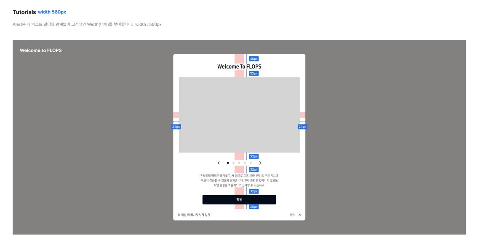
<Popup class="popup-tutorial" :visible="isTutorialPopupOpen" @close="closeTutorialPopup" width="560">
<div class="popup-tutorial-content">
<div class="tutorial-header">
<p class="title h7_en_s">Welcome to FLOPS</p>
</div>
<div class="tutorial-content">
<div class="tutorial-swiper-wrap">
<Swiper ...>
<SwiperSlide>...</SwiperSlide>
...
</Swiper>
<div class="tutorial-swiper-controls">
<div class="custom-swiper-prev swiper-button-prev"></div>
<div class="custom-swiper-pagination swiper-pagination"></div>
<div class="custom-swiper-next swiper-button-next"></div>
</div>
</div>
<div class="tutorial-desc b3_ko_s">...</div>
</div>
</div>
<template #footer="{ close }">
<Button class="btn-tutorial-confirm" ... @click="close">확인</Button>
<div class="tutorial-bottom">
<button class="no-more-show" @click="close">더 이상 이 메시지 보지 않기</button>
<button class="anotehr-close" @click="close">닫기</button>
</div>
</template>
</Popup><div class="popup-deem popup-tutorial">
<div class="popup-container" style="width:560px;">
<div class="popup-container-inner">
<div class="popup-content">
<div class="popup-tutorial-content">
<div class="tutorial-header">
<p class="title h7_en_s">Welcome to FLOPS</p>
</div>
<div class="tutorial-content">
<div class="tutorial-swiper-wrap">
<div class="tutorialSwiper">...</div>
<div class="tutorial-swiper-controls">
<div class="custom-swiper-prev swiper-button-prev"></div>
<div class="custom-swiper-pagination swiper-pagination"></div>
<div class="custom-swiper-next swiper-button-next"></div>
</div>
</div>
<div class="tutorial-desc b3_ko_s">...</div>
</div>
</div>
</div>
<div class="popup-footer">
<Button class="btn-tutorial-confirm">확인</Button>
<div class="tutorial-bottom">
<button class="no-more-show">더 이상 이 메시지 보지 않기</button>
<button class="anotehr-close">닫기</button>
</div>
</div>
</div>
</div>
</div>.popup-tutorial: 튜토리얼 팝업 전체.popup-tutorial-content: 팝업 내부 컨텐츠.tutorial-header, .title: 상단 타이틀.tutorial-content: 슬라이드/설명 영역.tutorial-swiper-wrap, .tutorialSwiper: Swiper 슬라이드.tutorial-swiper-controls, .custom-swiper-prev, .custom-swiper-next, .custom-swiper-pagination.tutorial-desc: 설명 텍스트.popup-footer, .btn-tutorial-confirm, .tutorial-bottom, .no-more-show, .anotehr-close: 하단 버튼swiper/vue 사용, 커스텀 네비/페이지네이션기본 alert 팝업 예시
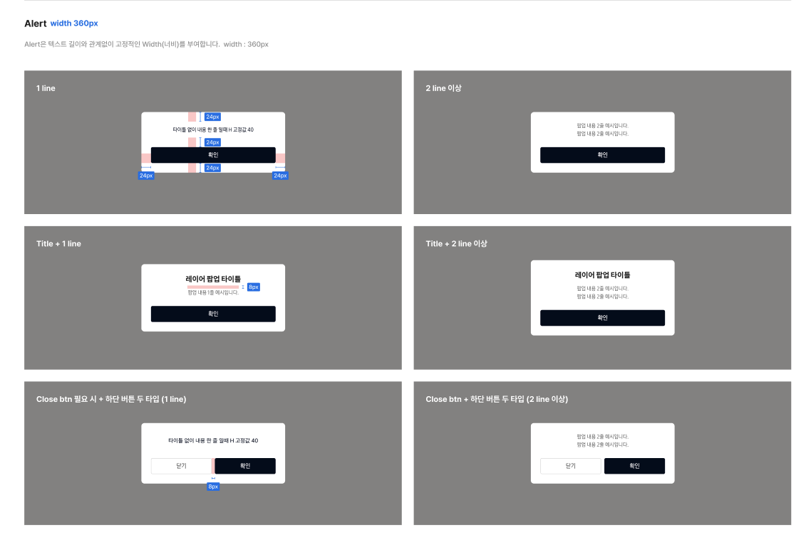
<Popup :visible="true" :min-height="120" size="medium" width="360" isDefault>
<template #title>내용</template>
<template #subTitle>내용</template>
<template #bottom>내용</template>
</Popup>
<div class="popup-deem popup-default popup-confirm">
<div class="popup-container" style="width: 360px; min-height: 120px;">
<div class="popup-container-inner">
<div class="popup-content">
<div class="popup-default-content">
<div class="default-header">
<div class="title">내용</div>
<div class="sub-title">내용</div>
</div>
<div class="default-content">
</div>
.popup-deem: deem 배경.popup-container: 팝업 컨테이너.popup-container-inner: 내부 컨테이너.popup-content: 내용.popup-default: default 스타일fixed; inset: 0; display: flex; align-items: center; justify-content: center;var(--color-deem)background: var(--color-white), border-radius: 8pxwidth, min-width: 320px, max-width: 90vwpopup-fade transition아래는 Popup2의 주요 상태(기본, 크기, 닫기, header/content/bottom slot 등)를 보여줍니다.
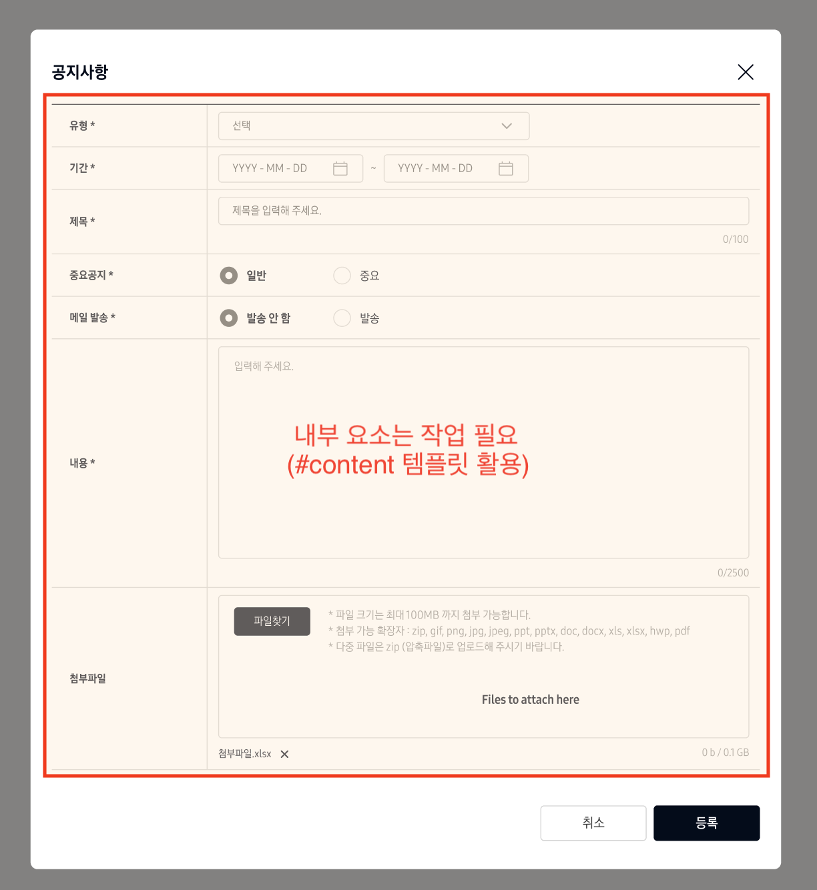
<Popup2 :visible="true" width="400" :min-height="120" size="medium" :show-close="true">
<template #title>제목</template>
<template #content>내용</template>
<template #bottom-left><button>취소</button></template>
<template #bottom-right><button>확인</button><button>등록</button></template>
</Popup2><div class="popup-deem">
<div class="popup-container popup-medium">
<div class="popup-container-inner">
<button class="popup-close"></button>
<div class="popup-content">
<div class="header"><div class="title">제목</div></div>
<div class="content">내용</div>
<div class="bottom">
<div class="left"><button>취소</button></div>
<div class="right"><button>확인</button><button>등록</button></div>
</div>
</div>
</div>
</div>
</div>.popup-deem: deem 배경.popup-container: 팝업 컨테이너.popup-container-inner: 내부 컨테이너.popup-close: 닫기 버튼.popup-content: 내용.header, .title, .content, .bottom, .left, .right: slot 영역.popup-small, .popup-medium, .popup-large: 크기fixed; inset: 0; display: flex; align-items: center; justify-content: center;var(--color-deem)background: var(--color-white), border-radius: 8pxbackground: url('/portal-ui/icon/icon-popup-close.svg')width, min-width: 320px, max-width: 90vwpopup-fade transition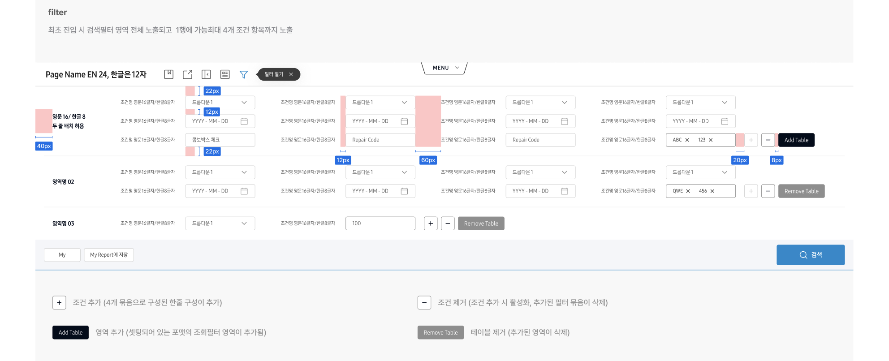
상단 고정 필터 바, 조건 테이블(동적 추가/삭제), 조건 그룹(최대 4개), 다양한 조건 타입(dropdown, input 등)을 지원합니다. My/Report 팝업, 튜토리얼 팝업, Swiper, Button, CustomDropdown 등 다양한 컴포넌트와 연동됩니다.
<Filter :initial-filter-state="true" @toggle-split-screen="..." /><div id="FILTER">
<div class="filter-wrap">
<div class="filter-header">...</div>
<div class="filter-contents">...</div>
</div>
</div>#FILTER: 전체 wrapper, fixed.filter-wrap: 필터 전체 영역.filter-header: 상단 헤더(타이틀, 아이콘, 툴팁).filter-contents: 조건 테이블/버튼/하단.table, .table-title, .conditions, .condition, .condition-title, .condition-data.btn-group-handle.add/remove: 조건 그룹 추가/삭제.filter-bottom, .filter-bottom-inner, .left, .right: 하단 버튼 영역min-width: 1440px, z-index: 50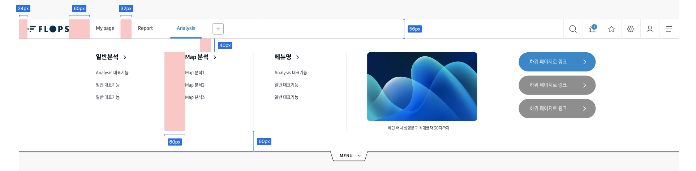
상단 고정 GNB(Global Navigation Bar), 메뉴/탭/툴팁/배너/버튼 등 다양한 UI를 제공합니다. 메뉴 동적 추가(최대 7개), 탭 전환, 각종 툴팁(알람, 즐겨찾기, 세팅, 유저 등), Popup2, TooltipPopover, DataTable, Button 등 다양한 컴포넌트와 연동됩니다.
<Gnb /><div id="GNB" class="is-open">
<div class="gnb-wrap">
<div class="gnb-header">...</div>
<div class="gnb-contents">...</div>
</div>
<button class="btn-gnb-toggle">...</button>
</div>#GNB: 전체 wrapper, fixed.gnb-header: 상단 네비/툴팁/로고.gnb-list, .gnb-btn, .is-active: 메뉴/탭/활성화.gnb-tooltips, .tooltip, .tooltip-alarm, .tooltip-favorite, .tooltip-setting, .tooltip-user.gnb-contents, .gnb-contents-inner, .section-menu, .section-banner, .section-button.btn-gnb-toggle: GNB 열기/닫기 버튼min-width: 1440px, z-index: 100